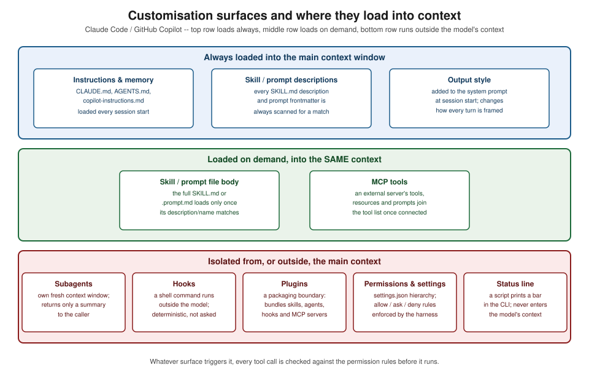

Customizing AI Workflows
|
This content was generated with the assistance of AI and should be verified against the official documentation before being relied on in production. |
This sub-section targets the Claude Code CLI 2.1.283, VS Code 1.139 with the GitHub Copilot Chat extension
(which now ships every Copilot feature in VS Code), and the GitHub Copilot CLI 1.0.88, all re-verified as
current as of 2026-09-28 — see
Claude Code — Changelog,
VS Code 1.139 release notes and
GitHub Copilot CLI — Releases. This is a fast-moving area, so
re-check an exact field, flag or file name against the linked docs before relying on it. Every page’s worked
example is this account’s own
ai-catalog repository, an issue → explore → plan → code → PR →
release pipeline of 102 iru-* skills and 3 agents for Java, .NET, Android, Swift and TypeScript projects,
pinned throughout to commit
58fb709
(main) so every excerpt and link points at exactly the same snapshot.
AI-Assisted Development covers using Copilot and Claude Code on a task; this sub-section covers shaping the assistant itself, so those everyday workflows behave the way a team wants by default rather than needing to be re-explained every session. Each surface below answers a different question about how an assistant’s behavior gets fixed in place:
-
Instructions and memory files (
CLAUDE.md,AGENTS.md,.github/copilot-instructions.md, path-specific*.instructions.md) are the always-on layer — facts and rules loaded automatically at the start of every session, never invoked by name. -
Prompt files and slash commands (
.github/prompts/*.prompt.md, Claude Code custom commands) package a reusable procedure behind a name the user or the model can invoke on demand. -
Skills (
SKILL.md, the open Agent Skills standard) go further than a prompt file: a name, a triggering description, a body of imperative steps, and optional supporting files and scripts, invocable by the user or discovered by the model from its description. -
Subagents and custom agents delegate a task to a worker running in its own, isolated context window, so the caller’s context only receives the result, not everything the worker read along the way.
-
Hooks run a shell command at a fixed point in the agent’s turn, outside the model, so an enforcement rule becomes deterministic instead of a request the model might skip.
-
Permissions and settings decide, independently of what an instruction or prompt asks for, which tool calls the assistant is actually allowed to run, at what scope (managed / project / user), and in what mode.
-
MCP connects an external capability — a database, an API, a document store — as tools, resources or prompts the assistant can call, without writing a bespoke integration for the assistant itself.
-
Output styles, the status line and related settings change how a turn is framed or what a CLI shows, rather than what the assistant is allowed to do.
-
Plugins and marketplaces package skills, agents, hooks and MCP servers as one distributable, versioned unit instead of a team copying loose folders between projects.
| If you need… | Use |
|---|---|
always-on rules |
instructions |
a reusable procedure |
a skill or prompt file |
an isolated worker |
a subagent |
deterministic enforcement |
a hook |
distribution |
a plugin |
external capability |
MCP |

What’s covered
Instructions and prompts
-
Instruction & Memory Files —
CLAUDE.mdlocations and precedence,@imports, auto-memory,AGENTS.md,.github/copilot-instructions.md, path-specific*.instructions.md, and keeping one portable source of truth across tools. -
Prompt Files & Slash Commands — Copilot
.github/prompts/*.prompt.md, Claude Code custom commands,$ARGUMENTS, and when a prompt file is enough versus when a skill is needed.
Skills
-
Skills — the Agent Skills open standard,
SKILL.mdanatomy, the full frontmatter reference, discovery locations, and skills invoking skills. -
Writing Effective Skills — descriptions written for triggering, imperative steps, stop conditions, idempotent resume, pass-through args, runtime detection, and the
iru-naming convention.
Agents
-
Subagents & Custom Agents — Claude Code built-in and custom
.claude/agents/*.mdsubagents, Copilot.github/agents/*.agent.mdand VS Code custom agents, handoffs, and when to reach for a subagent versus acontext: forkskill or an agent team. -
Orchestration Patterns — the skill → skill → agent composition behind the ai-catalog pipeline, dispatch by key, fan-out/fan-in, durable state in files, and recovering across sessions.
Automation and control
-
Hooks — Claude Code hook events, matchers, the JSON input/output contract and exit codes, Copilot
.github/hooks/*.json, and recipes for auto-format, blocking dangerous commands, a Stop verification loop, context injection and secret scanning. -
Permissions & Settings — the settings hierarchy, allow/ask/deny rule syntax, permission modes, sandboxing, how skill
allowed-toolsinteracts with settings, and Copilot’s own tool-approval and org policies. -
Configuring MCP Servers —
.mcp.jsonscopes,claude mcp add, VS Code’smcp.json, the Copilot cloud-agent MCP config, tool-naming for permissions, and bundling MCP servers in a plugin. -
Output Styles, Status Line & More — output styles, the status line, keybindings, and environment variables, with notes on Copilot equivalents.
Distribution
-
Plugins & Marketplaces — the plugin manifest and directory layout, a worked
plugin.json/marketplace.jsonpackaging a subset of ai-catalog, installing and distributing plugins, and Copilot’s own equivalent.
Optimisation and quality
-
Optimizing Skills & Agents — twelve techniques for keeping skills and agents cheap and reliable, each measured against the ai-catalog repository.
-
Testing & Evaluating Skills — trigger-accuracy checks, dry runs in a throwaway checkout, golden-output comparisons, regression passes, and skill versioning.
-
Security of Customizations — trusting third-party skills, plugins and MCP servers, prompt injection through tool output, secrets in hooks and settings, least-privilege
allowed-tools, and managed settings for organisations. -
Copilot & Claude Code Equivalents — a verified mapping table from every Claude Code customization surface to its Copilot equivalent, and migrating a Claude-first catalog to also serve Copilot.
Cheat sheet
-
Cheat Sheet (PDF) — a single-page, printable summary of every concept in this sub-section.
Related material on this site
-
Managing Context — what an assistant sees during a session, which the instruction and memory files documented here feed into.
-
Headless & CI Automation — running Claude Code and the Copilot CLI non-interactively, which depends on the permission settings documented here.
-
LLM Foundations & Prompting — the prompt-anatomy fundamentals these customisation surfaces build on.
Bibliography
The following sources were consulted while preparing this sub-section’s pages. Every field, flag, event name and file path was verified against the official documentation and current tool versions — never copied from a book.
Requester-provided books, consulted for the context-engineering and shared-library concepts only, never the source of an example:
-
Osmani, Addy. Beyond Vibe Coding: From Coder to AI-Era Developer. O’Reilly, 1st ed., Aug 2025. ISBN 979-8-341-63475-6. Publisher page: https://www.oreilly.com/library/view/beyond-vibe-coding/9798341634749/ ; no official code repository. Companion web edition: https://beyond.addy.ie/ .
-
Albada, Michael. Building Applications with AI Agents: Designing and Implementing Multiagent Systems. O’Reilly, 1st ed., Sep 2025. ISBN 978-1-098-17650-1. Publisher page: https://www.oreilly.com/library/view/building-applications-with/9781098176495/ . Official code repository: https://github.com/michaelalbada/BuildingApplicationsWithAIAgents .
Official documentation
Claude Code / Anthropic platform:
GitHub Copilot (GitHub Docs):
VS Code (Visual Studio Code documentation):
ai-catalog:
-
repository: https://github.com/albertoirurueta/ai-catalog
-
published docs: https://albertoirurueta.github.io/ai-catalog/
-
the
ai-catalogcomponent on this site: AI Catalog -
account: https://github.com/albertoirurueta
-
pinned worked-example commit:
58fb709(also browsable as a tree at58fb709) -
files excerpted across this sub-section, all at that pinned commit:
Specifications and standards:
-
JSON schemas referenced by example config files in this sub-section:
claude-code-settings.jsonandclaude-code-keybindings.json
Papers and engineering articles:
-
Anthropic, Effective context engineering for AI agents
-
Anthropic, Writing effective tools for AI agents — using AI agents
-
Anthropic, Best practices for Claude Code
-
Anthropic, Equipping agents for the real world with Agent Skills
Tools referenced:
-
tiktoken— a documented approximation used for token-count estimates where the Claudecount_tokensendpoint is not available -
Yelp — detect-secrets — the secret scanner the secret-scanning hook recipe calls
-
bytebase — DBHub — the MCP database server used in the MCP configuration examples
These books are consulted references, not the primary source of any example on this sub-section’s pages. On any discrepancy between a book and a tool’s own official documentation, that documentation is authoritative.